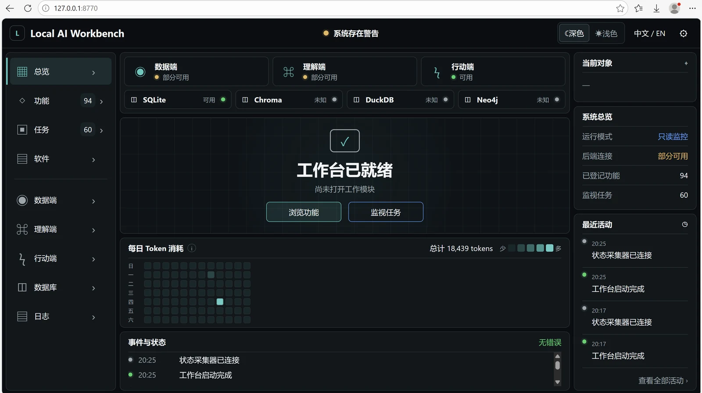

03 / KNOWLEDGE INFRASTRUCTURE
Yuantu / 源图
每一条结论，都有回到来源的路。Knowledge with
a route back to its source.

模型给出了答案，原始证据在哪里？The model has an answer. Where is the original evidence?
长期累积的政策文档与访谈记录难以检索。让模型直接阅读材料，容易把语义相似当作事实依据。Accumulated policy documents and interview records are difficult to retrieve. Direct model retrieval can mistake semantic similarity for factual support.
工程方法Engineering approach
保留不可变原始材料。SQLite 定位文本，ChromaDB 负责语义检索，DuckDB 查询事实，Neo4j 表达关系；多条检索路径回到相同的原始依据。Preserve immutable sources. SQLite locates text, ChromaDB handles semantic retrieval, DuckDB queries facts and Neo4j represents relationships. Multiple retrieval paths lead back to the same evidence.
已经实现与验证Implemented and demonstrated
公开仓库完成四数据库理解层。截图属于相关工作台观察原型，展示这一研究方向的可观察性设计，并不是 Yuantu 的正式交付界面。The public repository completes the four-database understanding layer. The screenshot is a related observability prototype, illustrating the research direction rather than a shipped Yuantu interface.
继续探索Still in exploration
将理解层与受控行动衔接，同时继续保留来源和执行证据。Connect understanding to controlled action while preserving source and execution evidence.